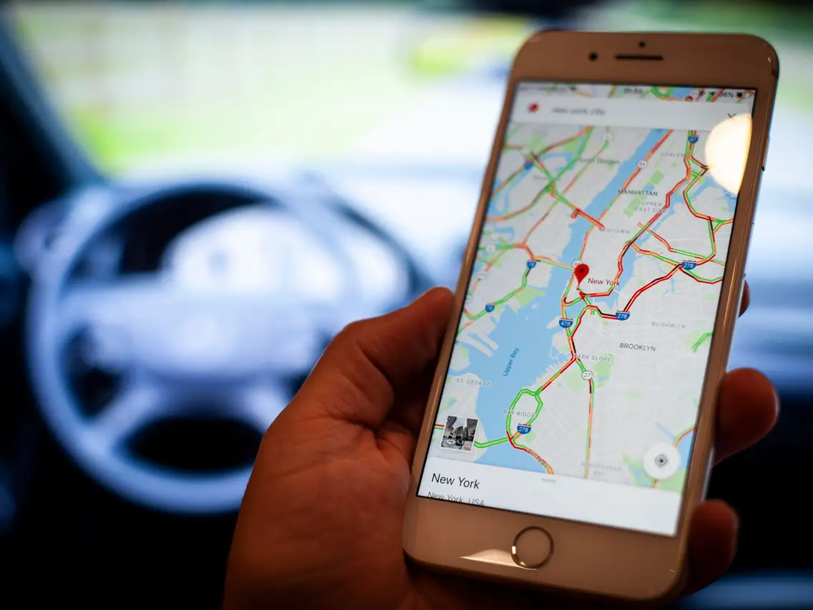

Navigation System

For my 275 CMPUT course at University, I was tasked to create a Navigation System. The Navigation System is a client-server model that allows the user to scroll around on a map. (the map of edmonton), to select start and end points of a trip. The coordinates of these points are sent to a route-finding server. This server computes the shortest path between two selected points, and returns the route information to a plotter program. This plotter displays the route as line segments overlaid on the original map by connceting the waypoints.
The server was implemented using c++ and the client was implemented using python by my teaching Assistant (TA) Tianyu Zhang. All credits and rights reserved.
The navigation system can be viewed as a client/server application where the client communicates with each other using interprocess commmunication (IPC) method to solve a complex problem.
This can perhaps be a building block in creating advanced and fater navigation systems with better precision.